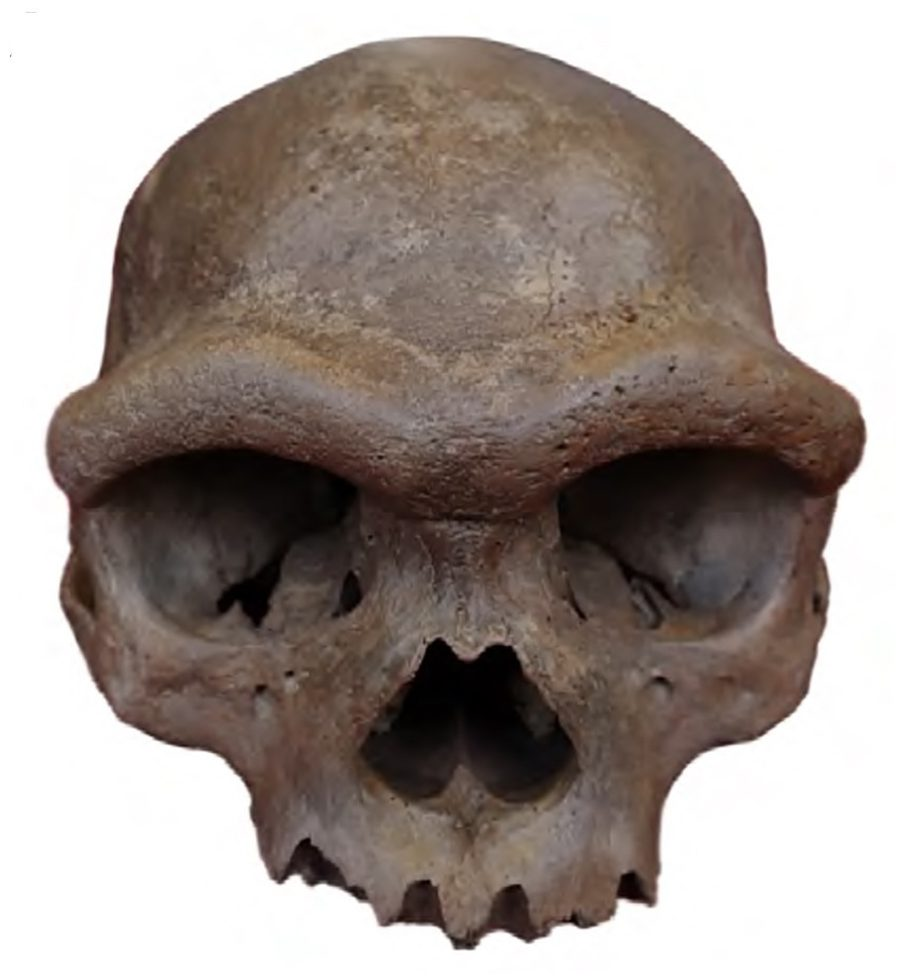

En pocas palabras
| Neandertales | Vivieron en Europa y Asia occidental hasta hace unos 40.000 años |
| Denisovanos | Conocidos sobre todo por su ADN, hallado en la cueva de Denisova (Siberia) |
| ADN neandertal en nosotros | Alrededor del 1-2 % en las personas no africanas |
| ADN denisovano | Hasta un 4-6 % en poblaciones de Papúa Nueva Guinea y Australia |
| Pionero | Svante Pääbo, premio Nobel en 2022 |
Leer el ADN de los muertos
Durante mucho tiempo se pensó que era imposible recuperar ADN de fósiles de decenas de miles de años: el ADN se rompe, se degrada y se contamina fácilmente con el de las personas que manipulan los huesos. Svante Pääbo dedicó su carrera a superar esos problemas con salas blancas, técnicas para detectar el daño típico del ADN antiguo y métodos de secuenciación masiva.
En 2010 su equipo, en el Instituto Max Planck de Leipzig, publicó el primer genoma neandertal. La gran sorpresa: las personas de fuera de África llevan alrededor de un 2 % de ADN neandertal. Nuestros antepasados se habían cruzado con ellos, probablemente en Oriente Próximo, hace unos 50.000-60.000 años.
Una especie descubierta por su ADN
Ese mismo año, el equipo de Pääbo analizó un pequeño hueso de un dedo encontrado en la cueva de Denisova, en las montañas de Altái (Siberia). Su ADN no era ni humano moderno ni neandertal: pertenecía a un grupo humano desconocido, al que llamaron denisovanos. Era la primera vez que se descubría una especie humana a partir de su ADN y no de sus fósiles.
Hoy se sabe que los denisovanos se extendieron por Asia, y que las poblaciones de Melanesia, Australia y partes del sudeste asiático llevan hasta un 4-6 % de su ADN. En 2018, en la misma cueva, apareció el hueso de una niña, apodada Denny, cuya madre era neandertal y cuyo padre era denisovano: una hija directa de las dos especies.
Herencias útiles
Algunos genes heredados de estas especies ayudaron a nuestros antepasados a adaptarse a nuevos ambientes:
- Los habitantes del Tíbet llevan una variante del gen EPAS1, heredada de los denisovanos, que les permite vivir a gran altitud sin producir un exceso de glóbulos rojos.
- Varios genes del sistema inmunitario y de la piel y el pelo de origen neandertal pudieron ayudar a enfrentarse a nuevos patógenos y climas fríos.
Herencias problemáticas
Otras variantes aumentan el riesgo de algunas enfermedades:
- En 2020, Hugo Zeberg y Svante Pääbo mostraron que un fragmento del cromosoma 3 heredado de los neandertales se asocia con un mayor riesgo de COVID-19 grave. Lo llevan alrededor del 16 % de los europeos y la mitad de las personas del sur de Asia.
- Otras variantes neandertales se asocian con la depresión, la adicción a la nicotina o la coagulación de la sangre, aunque sus efectos suelen ser pequeños.
Por qué desaparecieron
Los neandertales se extinguieron hace unos 40.000 años. No hay una sola explicación: cambios climáticos, competencia con los humanos modernos, poblaciones pequeñas y aisladas, y probablemente la absorción por mezcla. En cierto modo, no desaparecieron del todo: siguen en nuestro ADN.
Ver también: El origen africano, Atapuerca y el ADN antiguo y Svante Pääbo.
Fuentes
- Green RE, Krause J, Briggs AW, et al. A draft sequence of the Neandertal genome. Science. 2010;328(5979):710-722. doi:10.1126/science.1188021
- Reich D, Green RE, Kircher M, et al. Genetic history of an archaic hominin group from Denisova Cave in Siberia. Nature. 2010;468(7327):1053-1060. doi:10.1038/nature09710
- Huerta-Sánchez E, Jin X, Asan, et al. Altitude adaptation in Tibetans caused by introgression of Denisovan-like DNA. Nature. 2014;512(7513):194-197. doi:10.1038/nature13408
- Zeberg H, Pääbo S. The major genetic risk factor for severe COVID-19 is inherited from Neanderthals. Nature. 2020;587(7835):610-612. doi:10.1038/s41586-020-2818-3
- Slon V, Mafessoni F, Vernot B, et al. The genome of the offspring of a Neanderthal mother and a Denisovan father. Nature. 2018;561(7721):113-116. doi:10.1038/s41586-018-0455-x